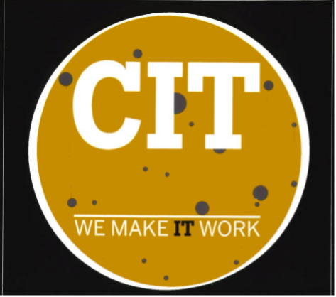

Purdue's CIT Concentrations
Welcome! This site will show you and direct you to everything you need to know about Purdue Concentrations! Be sure to complete the quiz at the end.
CIT Career Opportunities
Software Development
Mobile Apps Developer
Software Developer
Web Developer
UX/UI Designer
Full Stack Developer
Web Architect
Coder
Networking Systems
Network Architect
Security Analyst
Test Engineer
Network Administrator
Instructor
Consultant
Data Management
Data Research Scientist
Dev Ops Engineer
Data Analyst
Database Administrator
Coder
Cybersecurity
Cybersecurity Expert
Test Engineer
Chief Information Officer
Security Analyst
Industry Analyst